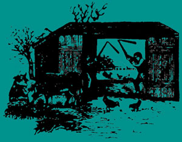
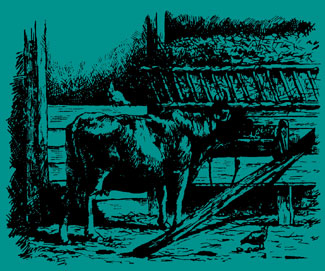

Ah, the vicissitudes of time. Two years ago, when there were NO currently relevant small-scale-farming introductory handbooks available, many of us welcomed the publication of Richard Langer's Grow It! with open arms. Now that we're all older and more experienced, however, some folks find it increasingly easy to criticize that breakthrough beginner's guide (see the Feedback sections of MOTHER NOS. 23, 24 and 25).
Which brings us to another breakthrough book that is just as important (probably more so) now as Grow It! was two years ago . . . and which may well come up for its share of criticism in another 24 months or so.
Be that as it may, John and Sally Seymour's record of 18 successful years on a shirttail-sized homestead in England is important now and should offer welcome encouragement to today's back-to-the-landers . . . both real and imaginary. I started serializing the book in my No. 25 issue and I'm sure that many readers will want a personal copy for their home libraries.-MOTHER.
Copyright © 1973 by John and Sally Seymour. Introduction
copyright © 1973 by Schocken Books Inc. Available from
your local bookstore or MOTHER'S Bookshelf for $7.50.
When you have got the cow, there is no more care about manure.
WILLIAM COBBETT
The cow should be absolutely central to the economy of a smallholding. When you get a cow you immediately find the pace of all your other smallholding activities will be forced on. To feed the cow you will have to grow fodder. To use up the manure from the cow you will have to dig or plough more land. To use up milk by-products, such as skimmed milk or whey, you will have to keep other small stock-probably pigs. Your pigs will then produce even more manure and you will feel like ploughing more land. Besides, you will need to grow crops for the pigs. You will have calves to dispose of-what will you do with them? Your cow will go dry one day and you will need another cow to fill in the gap. Then the time will come when both cows are in milk. Unless you are part of a community you will then have too much milk. What do you do then-put the two calves on one cow and milk the other? Whatever you do you will find the purchase of a cow will push on the pace of your other self-supporting activities. It will save, at a stroke, possibly more money than anything else. Butter and cheese go up and up in price.
But think hard about it. A cow is the biggest tie in the world. You will have to milk her twice a day and you will be very lucky to find somebody to stand in for you. Very few people in this world can milk. I would say that, unless you are fully determined to spend all of your life at home, or only go away at rare intervals when you can either get somebody else to look after your cow or else board her in their herd ('meat for manners'-in other words-they keep her and they get the milk), or unless you are part of a community, you should think loud and often before getting a cow.
But a cow is a very gentle, beautiful creature, and you can get very fond of her and derive much enjoyment from her. And you and your children can also derive much help. We have never been without a cow, in milk, these last fifteen years.
A cow can theoretically be kept on an acre of grass, but I would far rather have two cows on five acres. By flogging grass with nitrogenous fertilizer I think you could keep a cow on an acre during the summertime, but you would not be able to cut hay on it as well.
A cow needs at least a ton of hay every winter. You might get this off half an acre. If you can't grow it you can buy it. There is something to be said for buying in your hay and straw, if you have to buy anything. Farmers say when a man buys hay he buys land, and this is so in two ways. One way is that he thus spares his own land to feed animals or grow other crops. The other is that to buy hay is to buy fertility, and the best sort of fertility too: the kind that improves the land permanently, and brings you returns year after year. For every ton of hay or straw that comes on to your land stays there, in the beneficient form of muck, and improves the humus status of your soil. So if you wish to keep cows but have not got enough land, remedy this by buying in hay from other people. If you have weatherproof storage for the hay you can best buy it straight from the field, just after it has been baled. That is when it will be cheapest.
In the summer the cow will live, and give you plenty of milk, on grass, and grass alone. That is provided she has enough grass and it is of good quality. In the winter though she will need supplementary feeding or she will not give you very much milk. A dry cow or a bullock may very well live out all winter on good grass without any supplementary feeding except a little hay if it snows, but a cow in milk needs food, and her milk yield will reflect very sensitively how much food she is getting. The aim of the modern agri-businessman is to get the highest milk yield possible, and he feeds his milking cows on a very rich diet, mostly of bought-in cake. The self-supporter may not wish to get so much milk out of his cow or cows, and will be content with a lower standard of feeding. His cows will be the healthier for this: it is the 'steaming up', or very high-level feeding, to exact bigger and bigger milk yields, that causes so much disease in modern dairy cows. The nearer you can keep to nature-that is to the conditions for which cattle were bred by natural selection when they were in the wild state-the less disease you will have. You must depart from nature to some extent or you won't get much milk, but it is a matter of departing from it in moderation.
The traditional way of feeding dairy cows is to give each cow a maintenance ration, which is calculated to be enough to keep her in fit bodily condition but not to produce any milk, and then on top of that a production ration according to how much milk she will give. Thus twenty pounds of good hay are considered a production ration for a Friesian cow for a day (less for a Jersey), less hay plus some roots will do, or some of the hay can be replaced by good oat straw supplemented by roots. Thirty to fifty pounds of roots a day, plus perhaps ten to fifteen pounds of hay, would be a maintenance ration.
Your production ration is generally given in the form of concentrates: that is corn or 'cake'. Cake is nutritious matter made by compounders in huge mills and comes in paper sacks and is very expensive. If you allow three and a half pounds of a good average cake per gallon of milk that your cow is giving in the winter you will not be far wrong. But to be truly self-supporting you will not wish to buy in cake. The only thing you can do then is to grow plenty of fodder crops (roots and brassica), and corn and beans. A mixture of ground oats, barley and field beans, with possibly a sprinkling of some proprietary mineral mixture, or seaweed meal if you like (which has all the necessary mineral), fed at the rate of three and a half pounds per gallon, would not be far off. But the temptation for the overworked man on a smallholding is to buy cake and pay up and look pleasant-and hope to pay the mill bill with money got from the sale of calves or surplus stock. And this should be feasible.
Now for the question of what sort of cow to get, and how to get her. Jerseys are beautiful and very docile (ours came in the house one day and ate a number of corn dollies that Sally had been making for sale). They would happily live in the living room with you, if you allowed them. In India cows of course do, with mutual benefit to the cows and the people. Jerseys give superb milk: the richest in the world, averaging five percent butter fat. They have one big disadvantage for our purpose: their bull calves are almost worthless. The heifer calves can be reared up, of course, and sold for dairy herd replacements, or taken into your own herd. The bull calves however are not worth rearing up, commercially at any rate. The fat of the Jersey is yellowish and the animals do not put much meat on. If you serve your Jersey cow with an Angus* bull you will get a slightly better 'butcher's animal' but the butcher can still spot that it is half Jersey and will not give you much for it at any age. We keep a Jersey or two and what we do is to rear up one bull calf a year, keep him until two years old, and then send him off to the slaughterhouse to be killed for our own use; but more of this in the chapter about meat. The meat of the Jersey is very good incidentally-and what if the fat does look slightly yellow? Who are we to be colour prejudiced?
The Guernsey gives a little more milk than the Jersey, slightly less rich, is slightly hardier, and the bull calves are slightly less objectionable to the butcher. They still bear the stigma 'Channel Island' though, and won't fetch much.
The Friesian is the most widespread breed in the Western world today, and almost the only breed beloved of agri-businessmen. It gives an enormous amount of milk of low quality and crosses very well indeed with the Hereford bull or bulls of other breeds (nowadays often Charollais) to make an ox beloved of graziers and butchers. Most of the beef eaten in the Western world today comes from this source: the steers are a by-product of the milk industry. Even a pure-bred Friesian, although a dairy breed and not a beef breed, makes a very acceptable butcher's animal. The Friesian is big, and eats a lot more than, say, a Jersey, but gives a lot more milk.
The Ayrshire is something like the Friesian, although smaller, and with slightly more butter fat in the milk. She is very hardy. Not a good butcher's animal.
The Welsh Black is a fine animal and one I should say ideally suited for the self-supporter. Crossed with the Hereford she throws a fine beef calf, and she gives a fair amount of good milk. She is superlatively hardy, and most unlikely to go wrong.
The Shorthorn is a fine dual-purpose animal, hardy, quite good milk, good beef or beef cross. The Dairy Shorthorn has, alas, almost died out in Britain, and the Beef Shorthorn is not as widespread as it was. But occasional Shorthorn-type animals can be bought from small farmers, and very good they are too.
Of the beef breeds, the Hereford is supreme, for he impresses his coloration (the famous white head) and configuration on other breeds of cow, and the butchers love him and his progeny. The Hereford bull, incidentally, is the gentlest of creatures. The Jersey bull, in sharp contradiction to the Jersey cow-that sweetest of animals-is a little sod. Many a man has been killed by a Jersey bull.
The Aberdeen-Angus is also a fine beef breed, producing, with the Galloway, most of the fine beef that comes out of Scotland. It is a little animal, and thus fine for crossing with the Jersey. Its progeny are slower-maturing than the progeny of the Hereford.
The Charollais I know little about. It is said to be quicker maturing than our beef breeds, and to make a very fine beef animal, with a big proportion of expensive meat to cheap. Here in Pembrokeshire it does not seem to be so popular, and much of the hullabaloo which heralded its appearance in the U.K. his died down. It was to make millionaires of every one of us.
*A Charollais is even better.
To get your cows in calf, you either borrow a bull, have one of your own, unfortunately leave the gate open (by mistake) so that your neighbour's bull unfortunately gets through it and serves your cow (in which case you hide your delight and chide your neighbour for not keeping his bull under control), or you get the 'A.I. Man'. A.I. is artificial insemination. It is cheap ($3.25 at the moment), easy and effective. If you have only a handful of cows it is a very good way. The calves are no better and no worse than calves got by any other method, except that they are better in so far as A.I. is able to afford the best bulls in the world.
The disadvantage of A.I., though, is that if you have a number of cows and they are running out loose, you can't always 'spot' them when they are bulling, or on heat. A cow shows that she is bulling by mounting other cows in a lesbian fashion, or standing while they mount her, by bellowing, and by discharging at the rear. She must be caught immediately and served the next day. Immediately you see her you must telephone the 'A.I. Man' (Milk Marketing Board). He will come next morning. But if you are not constantly vigilant you can miss a cow, in which case you will have to wait exactly three weeks, when you hope she will show signs of bulling again. Having your own bull guards against such delay: your bull will know if a cow is bulling or not. But a bull would only be justified if you had quite a large herd of cattle: certainly not less than a dozen.
The cow gestates for 280 days, or about nine months. In this, as in many other things, she resembles the female of Homo sapiens. We like our calves to be born out of doors, in clean pasture, winter or summer. We leave well alone unless the cow has serious trouble and we have to interfere. Don't interfere until the cow has been in labour herself for several hours. Then, if you must, roll your sleeve up, douse your hand and forearm with carbolic oil, and gently dive in to see what is wrong. The calf may be wrongly presented, in which case you must move it about in the womb until it is rightly presented: preferably with its fore-legs poking out first with its nose between them (the normal way) or, at a pinch, a 'breach' presentation-arse first. If the presentation is normal, fore-legs first, but if the cow simply cannot get rid of the calf because he is too big, gently pull his fore-feet out, tie a cord on to them, and pull gently but firmly-and pull only when the cow is straining. Sometimes you end up by having to pull pretty hard, but don't pull harder than you have to. The above advice applies to sheep or horses too, incidentally. But if animals are kept as naturally as possible, running out in the open, not too fat or overfed, you should have no trouble at all. Generally what happens is that you go out to look at the old girl in the morning and there she is-standing up with a dear little calf sucking from her and she is licking its tail.
Don't be, afraid of her. She may look worried but if she knows you she won't butt you. Pick the calf up and carry it gently in front of the cow, stopping to let the cow smell the calf at frequent intervals, and the cow should follow you, and get them- both into the shed.
There are now many schools of thought as to what you should do next. Some people say take the calf right away from the mother and never let the two animals see each other again. We have never been able to bring ourselves to do this. The proponents of this method say that the cow will settle down to being milked by human or machine much quicker, and will forget the calf very quickly. Well, if you do this, you don't have my blessing.
Another way is to leave the calf and cow together for three or four days, or a week, not milking the cow yourself so that the calf gets a 'good start', and then separate them. When you do, both cow and calf will make the welkin ring with their bellows for two or three nights, and the cow may kick a bit when you milk her, and may not be too keen to let her milk down. Persevere.
Yet another method is to keep the cow away from the calf most of the time, then let the calf suck when you bring the cow in for milking until his belly is full, then take him away and get the rest of the milk out yourself. You may have trouble but on the other hand some cows don't mind it at all: I have a neighbour who milks with the calf sucking away on one side and himself squatting down milking on the other. Our cow is now having her fore-teats milked by the calf and her hind by us, and it is working perfectly.
Another way is to let the calf suck, say, once a day and you milk at the other end of the day. Again, you may possibly have psychological troubles with the cow, on the other hand possibly no trouble at all.
Probably to remove the calf altogether after a week is the best method. After a day or two of unsettlement the cow then settles down to the regime of being milked very nicely, and you get all the milk.
Then what to do with the calf. Well, you have got to feed the calf either on milk, reconstituted milk powder, or milk substitute for at least three months, and he will need about a gallon and a half a day when he gets a little older, perhaps a gallon a day to start with. Offer very very good hay to the calf when he is old enough to want it, and try him with a little concentrates, either ground corn or calf cake bought from the mill.
The moment you take the calf away from the cow you are going against nature, and you may have to pay the consequences. The calf may get ill. He will probably show this by scouring -that is having diarrhoea. If he has nasty smelly white droppings or blood in his droppings, send for the vet and no messing. If he just has pretty stinky diarrhoea, smelling like babies, take him off milk immediately, make him drink warm water, or warm water with a little glucose in it, and keep him warm and dry. Shove some antibiotics into him too: there are several pills and tablets you can get from the chemists. If you don't, he will probably die. He will live without milk for several days, with a little glucose and water, but use common sense, and when he seems to be better let him have a little milk diluted with water, then a little milk.
Calves should be kept out of draughts, but with fresh air passing above them, on clean bedding, be gently and kindly treated, and the apparatus you use to feed them should be clean and sterilised. The milk you give them should be body-temperature and fresh. A calf just let to suck naturally from his mother will almost never go wrong, particularly if left out of doors. Cows calve high in the mountains in the bitterest winter and lose hardly any calves. A calf taken from his mother and fed from a bucket is very likely to go wrong. The calves that you see at every cattle mart, or market, being thrown out of the backs of vans and lorries, dragged about by their tails, flung into dirty and contaminated pens where they stand in mess and draught for hours on end with other frightened little animals, to be auctioned, flung into the back of somebody's old banger, driven back to a farm, dragged into a stuffy shed: these calves are fighting for their lives and often don't bother to fight very hard. I have a neighbour who buys calves thus, perforce for he has to rear beef for a living, and I asked him how he got his replacements. 'Buy them in the mart on Monday', he said, 'put them on antibiotics on Wednesday, and bury them on Friday.'
We've done the same, although Sally is an absolute genius at nursing little things back to health. But it is a fight, and the whole system of selling little week-old calves in the open market should go the way of the slave-trade-out. It is monstrously cruel and extremely inefficient. There is a law that these calves should have a week of their mother's milk before they are sold. Without the protection of the colostrum-the medicinal first-milk of their own dam-they are doomed anyway. But many milk farmers just do not observe the law. How can anybody know if they have? Dairy farmers want rid of their calves-quick. They don't want them. This is why they are taken to the mart, to be sold to specialists, or smallholders' wives who like to rear a calf or two, and brought up on the bucket. There should be agencies set up all over the country, working by telephone, to put such dairy farmers in touch with calf-rearers-on the same principle as agencies to supply au pair girls. The buyer could then go and get the calf straight from the farm where it was born, make sure that it had been properly treated, carry it carefully to a nice warm car, drive it quickly home, and then nurse it. You see, many of the buyers want to get the calf to put on a cow of their own who has just calved, on the principle known as multiple suckling, which we shall deal with in a moment. Such buyers need a calf, or more, immediately: just when their cow has calved. If they introduce the calf to her foster mother immediately after the latter has calved she is far more likely to take to him.
To teach a calf to suck from a bucket we have a thing called a 'little mother', which is a stainless steel or aluminum bucket which hangs on the wall and has rubber teats hanging down from it. When the calf is very young they must be scrupulously cleaned. The more usual method is to teach the calf to drink straight out of a bucket. You do this by grabbing the calf's nose, poking two fingers in his mouth so that he starts to suck and forcing his nose into the milk. After a time he discover that thus he can suck milk besides your fingers. It may be a struggle at first, and women have got much more patience with small animals than men, not unnaturally. The great advantage of 'little mothers' is that they satisfy a calf's desire to suck. If a calf sucks his milk from a 'little mother' he will not suck other calves. If he gollops his milk up from a bucket he will have an insatiable desire to suck-anything-the navel of another calf (which can lead to disease), an old dirty rope-end, baling twine, or the poisonous lead paint off the gate of his stall.
When the calf is weaned you can either put him out onto good clean grass, if it be summertime, but go on feeding him some concentrates for several weeks, or else keep him on indoors (you must in the wintertime, and probably should if it's his first summer) and feed him on roots, good meadow hay, and perhaps four pounds of concentrates a day: more the older he gets.
The reason why one is worried about letting him out to grass is because of husk (or hoose). In many parts of the country the grass is infested with the lung worms of cattle, and these, if ingested by a young calf, give him the disease of husk. It makes him cough, he loses condition, and eventually dies. Why don't calves running out with their mothers get husk? Well they do, but they acquire such immunity from their mothers that it does them little harm. Whatever happens, if you are ever going to let your calf out of doors to mix with older cattle, he is going to get husk. The trick is to let him pick it up slowly, when he is older, in good condition, and well fed. He will then get an immunity to it before it gets him down. If you have really clean pasture, that is pasture on which no older cattle have grazed at least since it was last ploughed up and re-seeded, put him on that. We tether calves in our orchard, there is no husk there. Can't be-no very big cattle ever go there. If you turn callow young animals straight out into husk-infested pasture you are heading for very big trouble. You will have to get the vet, get the animals injected, get them indoors again and probably keep them indoors, well fed, for another year. I know-I've had it.
While on the subject of calves, there are three other ways of rearing up calves, and any of them might be useful for the self-supporter as a source of money income. After all, the rest of the world has to eat too.
The first is single-suckling. You simply let a herd of cows out onto grass, or rough pasture, with a bull at the right time of the year. The bull, and the cows, will do the rest. Take the calves off the cows at six months of age and sell them in the nearest 'suckled-calf sales'.
The second is outdoor multiple suckling. This is very applicable to the smallholder. Your cow has a calf. You don't want to milk her. Rush to a neighbour and buy another newborn calf, put him on your cow with your calf. Keep watch on them both for a few days, indoors, to make sure that she has accepted her foster child and is letting him suck, and then turn them out and, after a little more vigilance, forget them. She will rear two fine calves for you, instead of one. This is a very profitable performance.
The third method is multiple suckling indoors. It is one way of cheaply building up a herd, but it requires the patience of job. When your cow has calved go and buy two or three newborn calves. Keep them indoors, bring your cow in twice a day, tie her up, and make her allow the four little calves to suck (her own and the three others). She will kick. She will butt. But she can't kick if you hold her tail up tight in the air and if you put a rope tightly around her belly and loins, to pass just in front of her udder. Maybe she'll get tired of it all before you will. After three months of this, wean those four calves and put, say, three fresh ones on her, or two, depending on what condition she is in. After three months wean those and put one on her. Then dry the poor old thing off and give her a rest before she calves again. Ain't it a beggar, said the Queen of Spain. We've done it once but we'll never do it again.
As to the small matter of actually milking your cow-you do it like this. Pinch the top of a teat between thumb and forefinger so that the milk cannot escape from the teat back up into the udder. Then squeeze in a downwards direction with the rest of the hand.
|
 |
 |
|